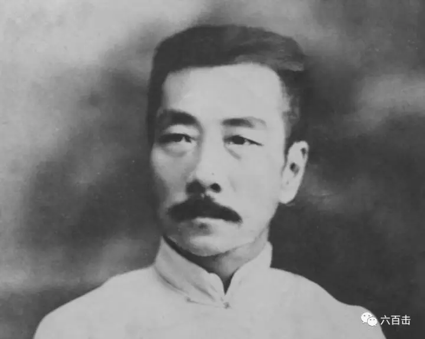
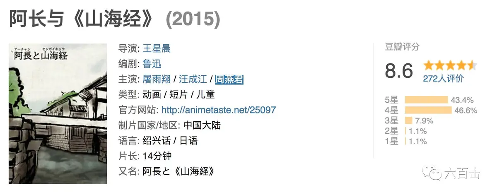

鲁迅的阴、冷、黑、沉、尖、辣、烈都是中国作家中独一无二的。他对中国的绝望是骨子里的，无余地的，他看到了中国人骨髓中的腐烂，所以他不仅在态度上而且在语言上也不跟中国的传统有任何调情。特别是在“三·一八”惨案的大是大非上，鲁迅的道义勇气和思想深度，在当时知识分子中，的确是其他人难以企及的。一篇《纪念刘和珍君》，就可以使鲁迅蔑视大多数知识分子。鲁迅与林语堂曾经是同路，共办《语丝》，关系很好。后来两人的分歧乃至互为“仇敌”，表面上是由于两人对“新月派”的不同立场，实际上则由于对“三·一八”惨案的不同态度。鲁迅忍受不了林语堂及梁实秋和新月派的那种旁观者的冷嘲热讽的闲适姿态。在他看来，面对全副武装的政府对手无寸铁的年轻学生的杀戮，林语堂等人的姿态即使不是帮凶，至少也是帮闲。如果是在平时，在面对其它问题时，一种源于道佛的悠闲，作为个人的人生态度本来无可厚非，但是面对类似“三·一八”这样的惨案，这种闲适的态度就几近于冷血，与促使鲁迅弃医从文的中国人看日本人杀同胞时的麻木之间，至多是五十步笑百步而已。
鲁迅和林语堂都批判过中国的传统和国民性。但是两人的深层态度则非常不同。把林语堂的小品文与鲁迅的杂文比较一下，差别太明显。鲁迅是不留任何余地的决绝，爱之深与恨之切难解难分，其语言尖刻而沉痛、智慧而辛辣，有种挖祖坟的力透纸背。这也是鲁迅与当时大多数知识分子的区别。而林语堂则是怨恨和厌恶之中的缠绵。他的《吾国吾民》确实把中国传统文化骂得挺狠，贬得很低，但他的语言是美文的，宋词婉约派的，极尽风花雪月的缠绵和飘逸轻盈的潇洒，我就想不通一个人在骂人时，怎么还能保持一种谈恋爱式的或对着青山绿水抒情式的语言。也许经过西方文化的熏陶，养成了一种喜怒不形于色的绅士风度吧。后来林语堂移居美国，用英文写的《人生的艺术》，在西方影响挺大，他说中国文人受老庄、佛家影响的这一路人生，是种艺术化的人生。我以为，这才是他骨子里的东西，才是他骂中国传统骂中国人骂得那么温柔敦厚那么绅士的原因。他好象不会尖刻，至多是幽默，而主调是感伤。他讨厌传统，从他定居美国可以看出。但他骨子里是传统文人，作为个体，他没有鲁迅的力量，去摆脱和突破传统的遗传。
综观中国现代历史，鲁迅的文学成就、思想斗士的姿态和肩扛黑暗闸门的殉难精神，确实无人能够与之比肩而立。要想超越他，不是多读几本书、多积累点儿知识、多写多少万字所能做到的。要有一种天赋的个人的深度才行。我一直不同意林毓生对鲁迅的评价。与同时代的其他知识分子相比，鲁迅是现代中国知识分子里，最少传统的束缚、最具尼采精神和殉难勇气的文人，正因为如此，他才有《野草》中的那种孤魂野鬼式的绝望和彷徨。鲁迅作为一个独立不羁的天才，不仅是当时中国的异己，更是传统中国和49年以后的中国的异己，因而其价值就更显得可贵。在中国，历来不乏林语堂式的文人，独独最缺少鲁迅这样的具有尼采精神的思想斗士。当然，鲁迅的激进和狭隘需要有另一种品质来平衡，但决不是林语堂和“新月派”式的闲适、高雅、冷漠或逃避，而是胡适式的宽容、平和与清醒。
晚期误入歧途的鲁迅
鲁迅的后期没有坚守住“文学与政治之歧途”的立场，也就自觉或不自觉地放弃了独立的超然的批判立场，走向“文学的阶级性”的歧途。他参加“左联”是他一生最大的失误和失败。他四面树敌，攻击胡适等具有自由主义倾向的知识分子，执迷于“香汗”和“臭汗”的教条分野。他把小布尔乔亚挂在嘴边，以轻蔑的口吻谈及在当时的中国非常脆弱的资产阶级，他不要宽容，而要痛打“落水狗”、“资本家的乏走狗”等等，但他自己也住在资产阶级的租界里，享受治外法权带来的安全。还在一些诸如谁拿了西方帝国主义的英磅，谁拿了苏俄的卢布上耿耿于怀，几近于斤斤计较。他早年倡导个人自由，但对西方的自由制度却充满了不信任，他实在弄不清什么样的价值观、社会体制才可以保障个人自由的实现。另外，他对当时学院派的攻击和对西方的偏见，肯定有他个人的心怀嫉恨的因素。胡适他们这些在西洋镀过金的博士，一去北大就是教授，而鲁迅这个去东洋学医又半途而废的野路子文人，没有在西洋镀过金，当官也就是个科员，去大学只混了个讲师。以他当时在文坛上的成就和他自视甚高的自我评价以及不宽容的性格，不嫉恨才怪呢。
鲁迅早期对“国民性”的深刻批判，在后期也陷入中国知识分子的民粹主义综合症，把抽象的无产阶级作为道义基础，拿下层人民说事儿。当然，他当时进左联，同情延安，也有出于道义上同情弱者的原因，在合法政府（强者）与在野党（弱者）之间，鲁迅这样的人，往往会不分青红皂白地站在弱者一边。但他淌过“左联”的混水后，就知道了这其中的深浅与险恶，他晚年已经觉悟到了自己当时的选择是错误的，看清了打着“人民”的道义合法性大旗的在野者的本质。可惜为时已晚，他的肉体已经不行了，再没有机会以全新立场继续思想斗士的创造性劳作。
没有神圣价值的悲剧
鲁迅后期的悲剧或者甚至都可以叫滑稽剧，有他个性中的因素，但是我觉得，这种个人因素如此放大乃至于狂妄到失控的程度，有更深层的文化传统上的原因。我们这个没有宗教、没有终极价值关怀的民族，无法给他提供一种更高的甚至绝对的尺度，使生而为人者有一份宗教性的谦卑和敬畏。我们的文化太世俗化了，没有西方的宗教性的绝对的彼岸尺度——无论多么伟大的人在上帝面前都是渺小的。如果我们的文化中能够提供一种类似西方基督教那样深广的宗教背景，或者鲁迅如果是个基督徒，那么在他写完《野草》之后，当他意识到自己在这个文化中社会中是唯一的孤魂野鬼，是匆匆的过客之后，他就再也不会回到世俗之中与庸人们纠缠了。他的《呐喊》、《彷徨》中的小说以及前期杂文，已经把中国人看透了，他“哀其不幸，怒其不争”的背后是《野草》中的绝望，那种前面只有荒凉的坟的绝望，他在这个文化中已经无路可走，处在一种“荷戟独彷徨”的状态中。但鲁迅与屈原的“众人皆醉我独醒”不同，屈原还相信明主，鲁迅则什么都不信，是灵魂上的虚无主义者——在绝望中把自己看成唯一的绝望者，在孤独中把自己提升为唯一的孤独者；没有对手的悲哀比有对手的失败更让他无法忍受。
处于这种状态中的鲁迅，前面只有三条路：自杀；走向与一切人为敌的唯我独尊的狂妄；面向一个更高的绝对价值进行自我灵魂的拷问与对话。在中国这种没有超越的神圣价值的世俗大背景中，《野草》中的鲁迅和鲁迅的〈野草〉已经是人生和创作的双重尽头了，他的眼中不可能再有更高更神圣的绝对价值，他在世俗中的彷徨、孤独不可能找到真正的灵魂皈依。他不可能象耶稣精神所昭示的信仰那样，在虚无中在怀疑中坚信意义坚持寻找，在被遗弃和主动放弃的孤独中绝望中不放弃希望。所以，当人无法靠自身的努力拯救自己的灵魂、而又没有超越自身的更高价值时，留给他的只有两种选择：不选择自杀，就只能选择唯我独尊的姿态与世俗作战了。他当时进“左联”，既有道义上的原因，更有沉寂多时有机会做一回盟主的原因。他与“四条汉子”的论战，表层是“国防文学”与“大众文学”之争，实际上是“左联”盟主地位之争。他进去后才发现，人家请他去“左联”，不是让他做说了算的盟主，而是把他当作党的统战工具用，这与他内心的自我期许完全是风马牛，他肯定有一种被别人当工具玩了一把的屈辱和愤怒，他的那种“荷戟独彷徨”的孤傲就必然指向任何他看不上的人和事物，以发泄他深受屈辱后的愤怒。
在中国，传统中只有狂妄的人格神（圣君和圣贤所构成的圣人），而没有超越世俗人格的真正的上帝。在这样的世俗化传统中，以鲁迅的深度与天才，他怎么可能不自视为人格神，自视为几百年才出一个的圣贤呢？他的心中没有上帝，眼中又能有谁呢?正是这种狂妄导致了他晚年的浮浅与刻薄。如果鲁迅心中有上帝，有敬畏，有谦卑，《野草》之后的他就不会再与庸人作战，也不会把自己降低为庸人，而是会写出类似圣·奥古斯丁的《忏悔录》或帕斯卡尔的《思想录》那种超越性的东西，鲁迅的悲剧也是整个中国知识界悲剧的缩影。心中没有超世俗的神圣尺度，没有对这神圣的真正谦卑和敬畏，我们就会永远挣扎和沉沦在或苟活在世俗的权力、金钱、地位和名声的泥潭中。鲁迅还是挣扎和沉沦，而大多数人呢？别说挣扎，连沉沦都没有，有的仅仅是苟活而已。永远是急功近利的小聪明，不可能有大智慧大悲悯大道义大坚韧。狂妄必遭天责，这种命运，在狂妄得绝对、卑贱得纯粹的汉文化传统中，连集道义、智慧、深邃和坚韧于一身的鲁迅也无力幸免，更何况绝大多数不及鲁迅者。然而，我们至今还没有一篇《纪念刘和珍君》，所以，尽管鲁迅不是完人和圣徒，但他仍然我们这个冷血的民族最需要的精神资源。
最后，向大家推荐一部豆瓣高分动画短片《阿长与山海经》，吴语方言，改编的非常有味道。

往期精彩回顾：
《第九日》| 你的神圣与耶稣没有一点关系
《乡愁》 | 没有一个人能够将信仰拍的如此诗意和凝重
走近大师 | 深紫色叙事思想家——基耶斯洛夫斯基
这里没有挑逗你眼目情欲的小鲜肉，也没有挑动你肉体情欲的段子
更没有膨胀你今生骄傲的鸡血。
我们只在乎那些最质朴真诚的作品，在那里我们才能恢复真正的想象力
我们也坚信这才是我们真正需要的。